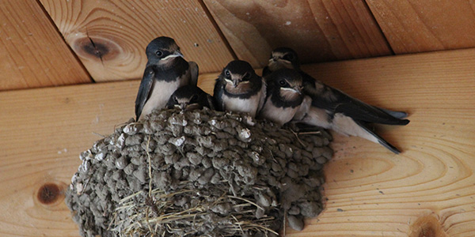
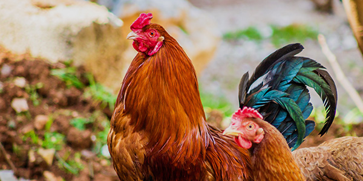

Storytellers
- 세션 1
- The Stonecutter
-
잘 들어보고 두가지 이상을 비교하는 ‘the comparative’
비교급을
어떻게 사용했는지 배워봅시다.
- 세션 2
- The Chameleon King
- 잘 듣고 ‘the superlative’ 최상급 표현 사용법을 영어로 배워봅시다

- 세션 3
- Hungbu and Nolbu: The story of two brothers
- 여러가지 형용사를 이용하여 사람의 성격을 설명하는 방법을 잘 듣고 배워봅시다.

- 세션 4
- What only the rooster sees
-
이 중국 이야기를 듣고, 과거에 일어났던 일들을 말할 때 쓰는
단순 과거형,
즉 'the past simple'을 사용하는 방법에 대해 배워보겠습니다.
Expressions

- 세션1
- Makeover
-
오늘의 에피소드를 듣고 자주 사용하는 영어 표현을 배워보세요.
Listen to find out how to use an everyday English expression.
- 세션2
- Out of the picture
-
오늘의 에피소드를 듣고 자주 사용하는 영어 표현을 배워보세요.
Listen to find out how to use an everyday English expression.
- 세션3
- Treading on eggshells
-
오늘의 에피소드를 듣고 자주 사용하는 영어 표현을 배워보세요.
Listen to find out how to use an everyday English expression.
- 세션4
- To see red
-
오늘의 에피소드를 듣고 자주 사용하는 영어 표현을 배워보세요.
Listen to find out how to use an everyday English expression.
Action
- 세션 1
- Phobias
-
오늘의 에피소드를 듣고 런던 사람들의 공포증에 대해서
알아보세요.
그리고 그들이 어떤 영어 표현을 사용 했는지 알아보겠습니다.
- 세션 2
- Weather
-
오늘의 에피소드를 듣고 런던에 살고 계신 분들이 어떻게
런던날씨를
묘사했는지 알아보겠습니다.
- 세션 3
- What would you change?
-
오늘의 에피소드를 듣고 런던에 살고 계신 분들이 영국의 어떠한
면을 바꾸고
싶어하는지 알아보겠습니다.
- 세션 4
- Childhood Rules
-
오늘의 에피소드를 듣고 런던에 살고 계신 분들이 어렸을 때
지켰어야만 했던
규칙에 대해서 알아보겠습니다.